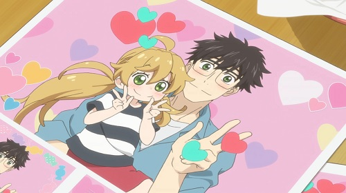
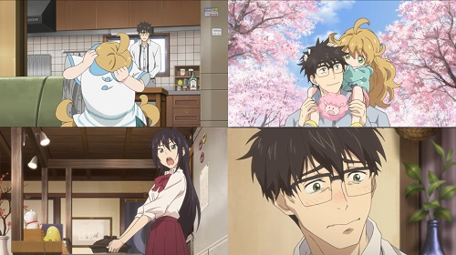

Amaama to Inazuma: Ternura, comida y amor en un mismo lugar.
Kouhei Inuzuka es un profesor de matemáticas y un padre soltero, ya que su esposa murió por una extraña enfermedad, así que el tiene que hacerse cargo de su hija Tsumugi pequeña. Kouhei es algo torpe haciendo algunas cosas, una de esas cosas en especial es cocinar y normalmente le servía comidas pre-cocinadas a su hija. La vida de esta familia cambia después de visitar un restaurante que está a punto de cerrar y que pertenece a la familia de una estudiante de Kouhei, Kotori Lida y por obra del destino se reunen en diferentes ocasiones para cocinar y mantener vivo ese restaurante.
Es un anime de 12 capítulos lanzado en 2016 por TMS Entertainment. Es una historia simple sin mucho desarrollo pues solo nos cuenta la vida diaria de un padre luchando por mantener y hacer feliz a su hija Tsumugi. Cada capítulo tiene el nombre de un platillo diferente y por ende los personajes principales son los encargados de prepararlo, esto de los platillos puede parecer poco atractivo para muchos, pero si disfrutas de la cocina entonces no tendrías problema con esto.
Personalmente moría de ternura con las expresiones de Tsumugi en cada episodio y la satisfacción de ver a los personajes degustando un platillo diferente, puedo decir que me dieron ganas de aprender a cocinar al ver este anime. Aunque siento que hizo falta un desarrollo más profundo de los personajes para comprender un poco más de su historia y así sentir más los momentos emotivos de este anime.